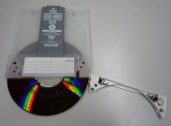

Operating Documentation
Direction 5193574-800, Rev# 22
LightSpeed 7.X Service Methods
Module Version 1.0, Version Date 11/8/10
Operating Documentation |
| Required Persons | Preliminary Reqs | Procedure | Finalization |
|---|---|---|---|
| 1 | Not Applicable | 5 mins | 3 mins |
This procedure explains how to remove media from a DVD RAM cartridge for use in the Peripheral Media Tower equipped with a single DVD Multimedia Drive.
| Last revised: | 4 November 2010 |
| Condition | Reference | Effectivity |
|---|---|---|
For use with Operator Console utilizing a single bay Peripheral Media Tower (DVD - Multimedia drive only) | - | - |
DVD - Multimedia drives can not accept cartridge type DVD-RAM media. Use the following procedure for removing the DVD-RAM media from the cartridge if so equipped. | - | - |
Handle bare DVD-RAM media with care. Do not touch the recording surface. Fingerprints, dirt, dust and scratches on the recording surface can destroy previously recorded data and prevent recording of additional data. | - | - |
If required, use only approved CD/DVD media disk cleaning solution (not supplied) to clean any disks that become contaminated with fingerprints, dirt, and dust. Do not use alcohol, anti-static or other cleaning solutions. A soft fiber cloth and mild solution of water and unscented household detergent can be used to clean the disks. | - | - |
Take care with placing bare DVD-RAM media without cartridge, do not scratch. | - | - |
Always return a DVD-RAM media to its cartridge for storage. Note: In the case of double-sided DVD-RAM media, take care to insert the media back into cartridge with the same orientation as it was removed. If media is inserted upside down, any labeling on the cartridge will not be consistent with data on the disk. | - | - |
Remove the 2 Locking Pins as shown in the following illustrations.
Illustration 1: DVD-RAM Media (Maxell)

| Item | Description |
| 1 | Cartridge Lid, Release Button |
| 2 | Cartridge Lid, Locking Pins |
Illustration 2: DVD-RAM Media (Verbatim)

Push the Release Button and pull out the cartridge lid.
Illustration 3: DVD-RAM Media (Maxell)

Illustration 4: DVD-RAM Media (Verbatim)

Remove the DVD-RAM media.
Illustration 5: DVD-RAM Media (Maxell)

Illustration 6: DVD-RAM Media (Verbatim)

Place bare DVD-RAM media back in cartridge for storage.
Close cartridge lid once DVD-RAM media is fully inserted into cartridge.